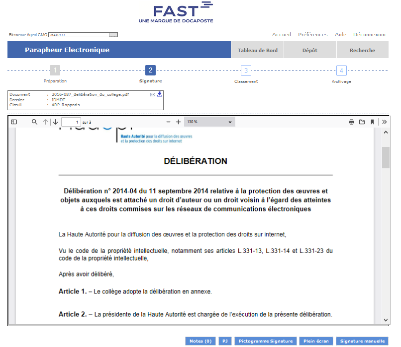
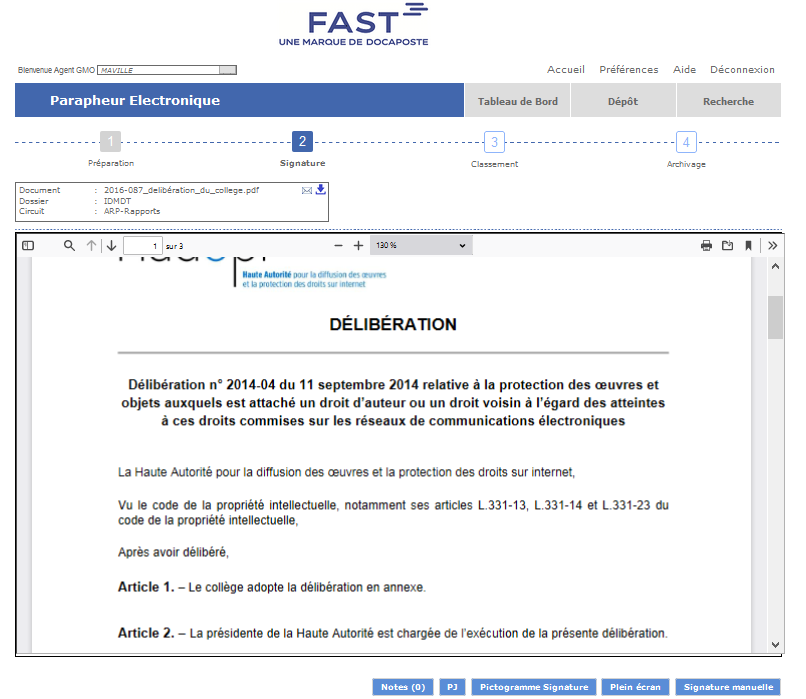

Gestion Dématérialisée des Actes Administratifs avec A.I.R.S. Délib et Fast Parapheur
 


Optimisation des Processus de Rédaction, Validation et Signature Électronique
- Categorie: Modernisation Administrative : Transition Numérique de la Gestion des Actes Officiels avec A.I.R.S. Délib et Fast Parapheur
- Pour: : Mairie de Montrouge
- Projet URL: https://www.fast-docaposte.fr/nos-solutions/fast-parapheur/
Introduction au Projet :
La transformation numérique redéfinit le paysage de la gestion administrative, mettant en lumière l'importance cruciale de solutions innovantes. Notre projet vise à propulser cette révolution dans le secteur public en introduisant la "Gestion Dématérialisée des Actes Administratifs" à travers l'intégration de deux piliers essentiels : A.I.R.S. Délib et Fast Parapheur.
Contexte et Enjeux :
Au cœur de cette initiative se trouve la volonté de garantir une gestion transparente, efficace, et sécurisée des actes administratifs au sein des collectivités. Face aux défis de la gestion traditionnelle, souvent manuelle et chronophage, notre projet s'érige comme un catalyseur de l'efficacité administrative, cherchant à optimiser chaque étape, de la rédaction à la signature électronique.
Introduction à A.I.R.S. Délib :
A.I.R.S. Délib, développé par Digitech, est une solution avancée de gestion dématérialisée des actes administratifs. Spécifiquement conçue pour optimiser la gestion des délibérations, arrêtés, et décisions au sein des collectivités, cette application offre un suivi précis des actes, une optimisation des circuits de validation, et une transmission sécurisée des documents pour contrôle de légalité. Que ce soit pour une collectivité unique ou un ensemble de collectivités mutualisées, A.I.R.S. Délib répond aux besoins variés du secteur public.
Introduction à Fast Parapheur :
Fast Parapheur, un connecteur essentiel dans le monde de la gestion documentaire, vient compléter l'écosystème d'A.I.R.S. Délib. En tant que solution de paraphe électronique, Fast Parapheur simplifie et sécurise le processus de signature des documents. En intégrant Fast Parapheur à A.I.R.S. Délib, les utilisateurs bénéficient d'une transition fluide entre la rédaction, la validation, et la signature électronique des actes administratifs.
Principales Fonctionnalités de Fast Parapheur :
- Signature électronique : Paraphe électronique sécurisé et légalement contraignant.
- Flux de validation : Simplification des circuits de validation avec une traçabilité totale.
- Intégration transparente : Connectivité harmonieuse avec les solutions documentaires comme A.I.R.S. Délib.
- Gestion des approbations : Suivi efficace des étapes d'approbation.
- Sécurité et Conformité : Respect des normes de sécurité et des réglementations en vigueur.
- Rapidité d'exécution : Accélération des processus grâce à la signature électronique.
Avantages de l'Intégration A.I.R.S. Délib avec Fast Parapheur :
L'intégration de Fast Parapheur à A.I.R.S. Délib offre une expérience utilisateur fluide, accélère la validation des actes administratifs, garantit la sécurité des signatures électroniques, et contribue à la conformité réglementaire. Cela se traduit par une gestion plus efficace, des processus optimisés, et une réduction significative des délais dans le cycle de vie des documents administratifs.
Les Grandes Étapes de Mon Projet :
- J'ai entrepris une analyse approfondie de mes besoins ainsi que de ceux des utilisateurs finaux.
- Cela a impliqué de prendre le temps d'explorer en détail les exigences du service informatique et des utilisateurs.
- J'ai mené des entretiens et examiné les processus existants pour identifier les domaines nécessitant des améliorations.
- J'ai réalisé une évaluation minutieuse des lacunes dans mes processus actuels, conduisant à une analyse critique pour identifier les points faibles, les frictions et les opportunités de renforcement.
- J'ai établi des objectifs clairs et mesurables, alignés sur mes priorités stratégiques.
- Cela s'est concrétisé par la création d'une feuille de route détaillée.
- J'ai également identifié les résultats attendus pour guider le projet vers le succès, en définissant des indicateurs de performance clés pour évaluer l'impact du projet.
- Une évaluation technique approfondie du projet a été réalisée pour déterminer sa faisabilité.
- Cela a inclus une analyse approfondie de la viabilité technique, identifiant les ressources nécessaires en termes de personnel et de technologies.
- J'ai élaboré un plan détaillé des ressources, couvrant les compétences requises et les équipements nécessaires.
- J'ai procédé à une sélection minutieuse des technologies appropriées.
- Ce choix a été effectué en tenant compte de la compatibilité, de la performance et de la capacité d'intégration des technologies.
- J'ai également évalué les synergies entre les différentes solutions technologiques pour assurer une cohérence globale.
- La création d'une conception détaillée a mis en lumière l'architecture logicielle et les flux de données.
- J'ai élaboré une vision détaillée du système, décrivant son fonctionnement interne, son intégration et son évolutivité.
- J'ai spécifié clairement les interactions entre Cart@DS et FAST-Parapheur, définissant les interfaces et les échanges d'informations entre les deux solutions.
- J'ai procédé à l'implémentation des fonctionnalités requises dans Cart@DS, en tenant compte des besoins spécifiques du service informatique.
- Cela a impliqué la programmation et la configuration des nouvelles fonctionnalités dans Cart@DS, en prenant en compte les exigences spécifiques du service informatique.
- Parallèlement, j'ai intégré FAST-Parapheur dans le système, réalisant des tests unitaires réguliers pour assurer sa stabilité.
- J'ai réalisé une intégration complète des solutions pour former un système cohérent et fonctionnel.
- Des tests exhaustifs ont été effectués pour garantir la stabilité, la performance et l'interopérabilité du système.
- Cela a inclus l'assemblage de toutes les composantes pour former un système unifié.
- J'ai organisé des sessions de formation ciblées pour les utilisateurs finaux et le personnel informatique.
- Des programmes de formation adaptés aux différents publics ont été mis en place, mettant l'accent sur la planification précise et l'exécution du déploiement sur l'ensemble de l'infrastructure.
- Une équipe dédiée a été en place pour surveiller de près les premières phases du déploiement, intervenant rapidement pour résoudre tout problème émergent.
- J'ai élaboré un plan détaillé pour le déploiement, définissant les étapes chronologiques et les responsabilités.
- L'exécution a été réalisée avec une attention particulière pour garantir la fluidité du processus.
- Une équipe dédiée a été en place pour surveiller de près les premières phases du déploiement, intervenant rapidement pour résoudre tout problème émergent.
- J'ai assuré une communication proactive avec les parties prenantes tout au long du processus.
- Cela a inclus le partage de mises à jour régulières sur l'avancement du projet et l'anticipation des questions potentielles.
- J'ai mis en œuvre des stratégies de gestion du changement pour faciliter l'acceptation du nouveau système, comprenant des séances d'information, des supports visuels et des forums de discussion.
- Des mécanismes de suivi des performances du système ont été mis en place, intégrant des outils pour évaluer en temps réel les performances du système.
- Cela a permis une réactivité immédiate aux éventuels problèmes.
- Un processus systématique de collecte de feedback a été établi, permettant d'apporter des améliorations continues en fonction des retours des utilisateurs.
- Un processus systématique de collecte de feedback a été mis en place.
- Cela permet d'apporter des améliorations continues en fonction des retours des utilisateurs.
- Cette démarche garantit une évolution constante du projet, en tenant compte des besoins et des préférences des utilisateurs.